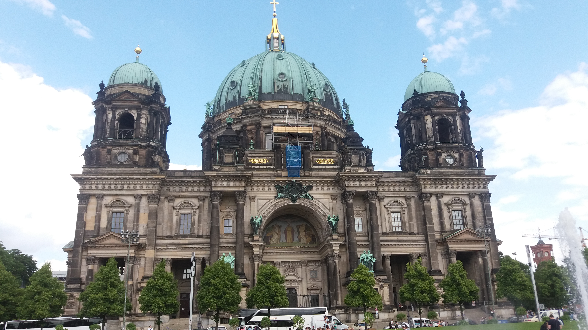
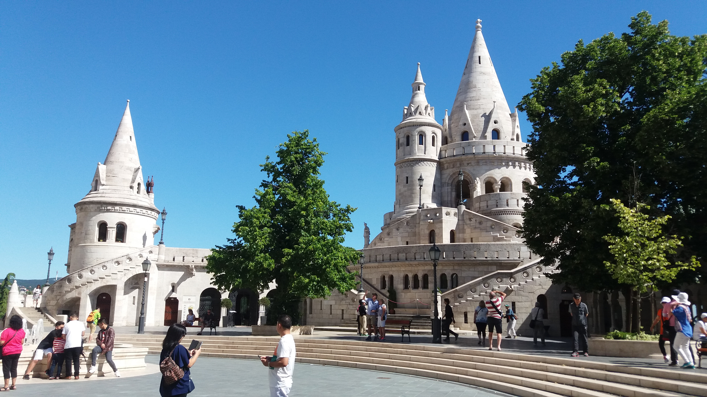
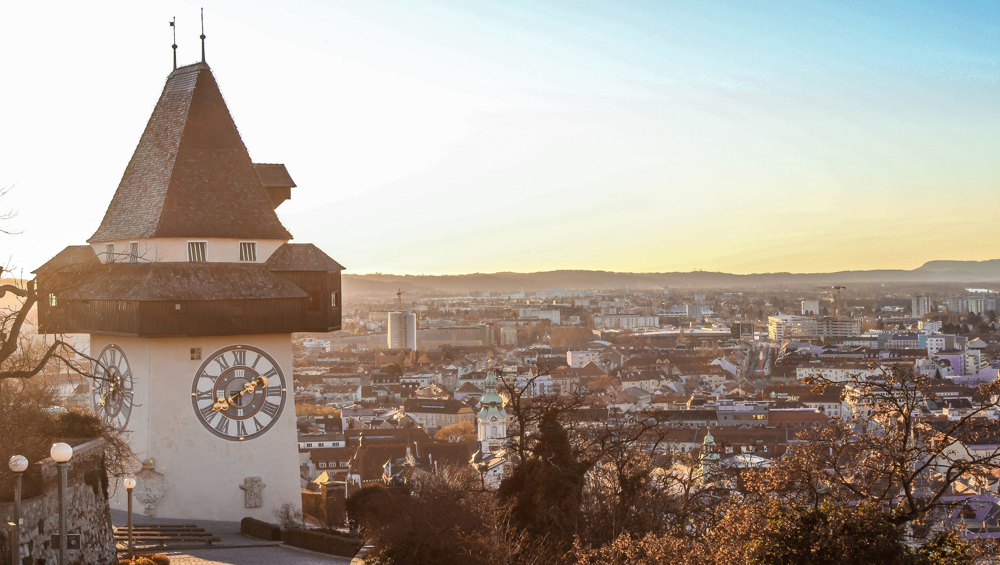
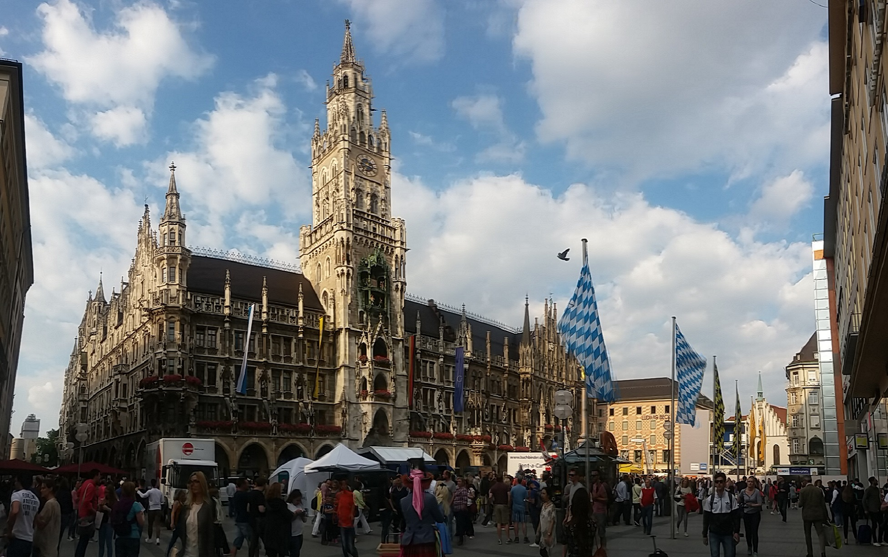
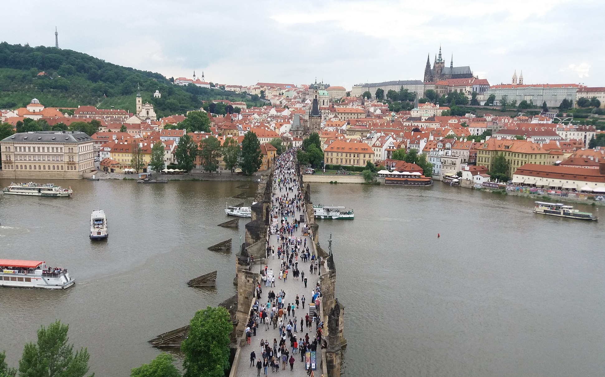
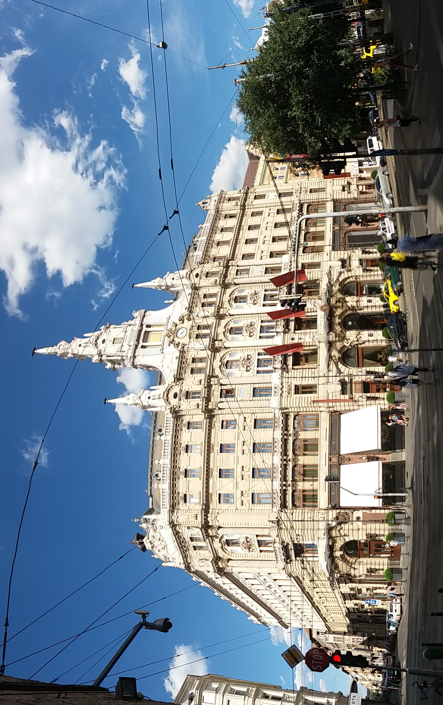
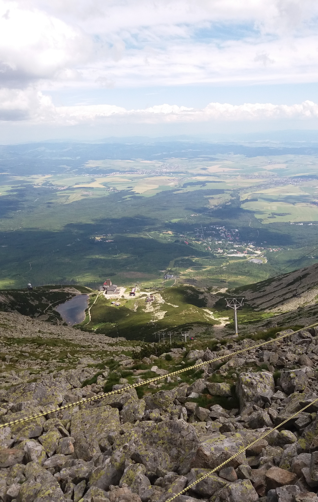
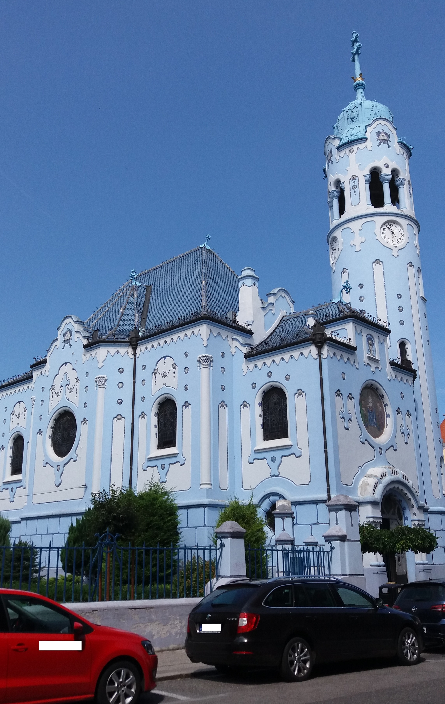
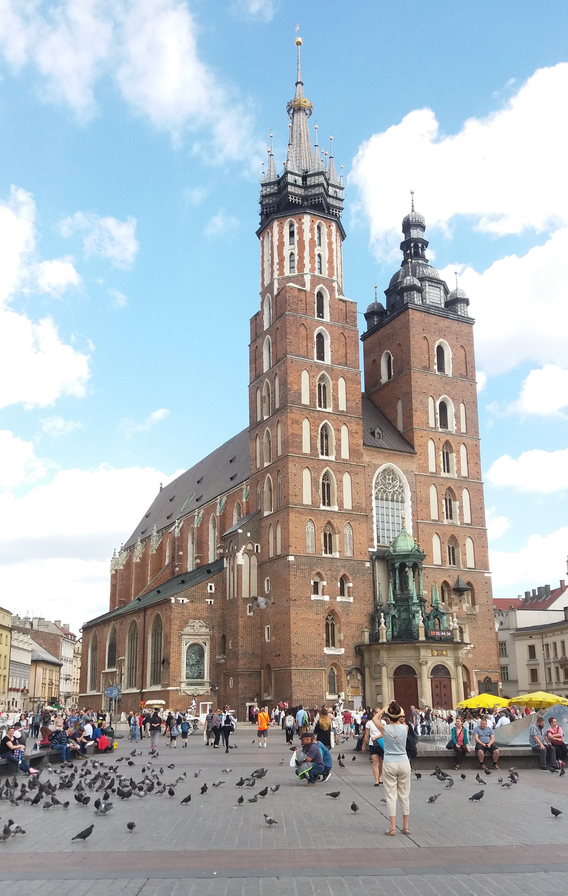

|

柏林大教堂(Berliner Dom, Germany)
|

漁人堡(Halászbástya, Hungary)
|

格拉茲時鐘塔(Uhrturm, Austria)
|

慕尼黑新市政廳
(Neues Rathaus, Germany)
|

查理大橋(Karlův most)、布拉格城堡(Pražský hrad, Czech Republic)
|

紐約咖啡館
(New York Café, Hungary)
|

塔特拉山國家公園
(Tatranský Národný Park, Slovakia)
|

聖伊麗莎白教堂
(Kostol svätej Alžbety, Slovakia)
|

聖瑪莉大教堂
(Bazylika Mariacka, Poland)
|